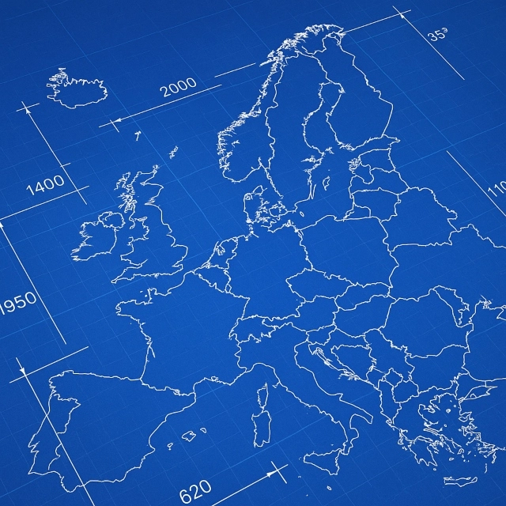

Volt, un modèle pour l'UE
Notre organisation, un exemple de bonne pratique en matière de démocratie européenne

L'idée
Volt Europa est comme une « mini-UE » – avec toutes ses forces et ses faiblesses. Nous disposons d'une organisation unique, mais nous ne l'utilisons pas à notre avantage. Dans notre programme Moonshot, nous proposons un gouvernement européen politique, mais nous n'utilisons notre Bureau européen que comme une structure administrative. Nous voulons donner un pouvoir d'initiative législative au Parlement européen, mais nous avons supprimé de nos statuts notre propre équivalent : une assemblée de délégués. Pire encore, nous commençons à limiter les pouvoirs de l'Assemblée générale – qui, par exemple, pouvait auparavant décider des alliances politiques par le biais de la délégation du Country Council après les élections européennes de 2019 et 2024, et qui ne peut désormais émettre qu'un avis non contraignant (nous avons voté en ce sens lors de la dernière réforme des statuts à Francfort). Enfin, nous avons le Country Council, qui pourrait être notre deuxième chambre et une meilleure version du Conseil européen, mais nous l’avons également dépouillé de ses compétences.
Nous sommes loin d'être un modèle de démocratie européenne fonctionnelle. Oui, nous voulons une « EUtopia » telle que définie dans notre stratégie Shein29, mais pouvons-nous vraiment espérer que crier « Abolissons le Conseil » convaincra un quelconque chef d'État siégeant à ce Conseil de le faire ? Il est très difficile de créer un effet de levier sur cette base.
Je propose une approche différente et j’aimerais que nous fassions de notre organisation interne une meilleure version de l’Union européenne d’aujourd’hui. Pourquoi ? Parce que si notre Country Council était une version améliorée du Conseil de l’UE, par exemple, nous pourrions demander aux chefs d’État de nous imiter, chaque fois qu’ils appellent à une Europe plus forte. Et nous pourrons faire valoir auprès du public que nous avons compris l'Europe et que si nos gouvernements actuels ne modifient pas les traités pour aller dans cette direction, il suffit de voter pour nous et nous le ferons.
De cette manière, nous commencerons à utiliser notre organisation comme levier pour faire avancer le changement.
Qu'est-ce que cela signifie concrètement ?
Par rapport à l'Assemblée générale de Francfort, pour laquelle les statuts et le règlement intérieur ont été réécrits par le Bureau européen et l'équipe juridique de l'EUR, je préférerais un processus plus co-constructif, et donner l'équivalent d'une « initiative législative » aux membres, ce qui signifie que la communauté DreamCom animerait un Consillium soutenu par l'équipe juridique de l'EUR, au sein duquel les représentants des chapîtres pourraient élaborer un premier projet de statuts et de règlement intérieur afin que la structure de Volt ressemble à l'Union européenne que nous souhaitons.
Le Country Council et le Bureau européen adopteraient ensuite cette version initiale, à l'instar d'un trilogue entre les institutions européennes. La version finale serait soumise au vote de l'Assemblée générale.
Calendrier
Idéalement, ce projet sera lancé après l'Assemblée générale de Bratislava, la première étape importante étant le vote sur la version mise à jour des statuts et du règlement intérieur lors de l'Assemblée générale de 2027.
Par la suite, nous commencerons à faire passer le message que Volt Europa est une Union européenne meilleure et plus démocratique, et qu'il est temps soit de réformer les traités, soit d'élire Volt aux parlements nationaux et de lui confier des responsabilités, afin que nous puissions y parvenir.
Comment mesurez-vous le succès ?
En interne, nous aurons accompli beaucoup si :
- le rôle du Country Council a évolué pour devenir une deuxième chambre qui corrige les défaillances actuelles du Bureau européen,
- une assemblée de délégués a été mise en place pour assurer une représentation basée sur l'adhésion effective et une prise de décision légitime,
- le Bureau européen est capable de communiquer rapidement et de manière coordonnée avec toutes les sections grâce à des processus établis.
Et en externe, par :
- le nombre de publications dans les médias à travers l'Europe discutant de notre modèle organisationnel comme modèle pour l'Union européenne,
- (Objectif Panini) le nombre de chefs d'État rencontrés pour discuter de la manière dont Volt Europa pourrait servir d'exemple pour une réforme du Conseil de l'UE.
- (Objectif ambitieux) une réunion avec la Commission (Président) pour présenter la vision de Volt d'une démocratie européenne qui fonctionne.